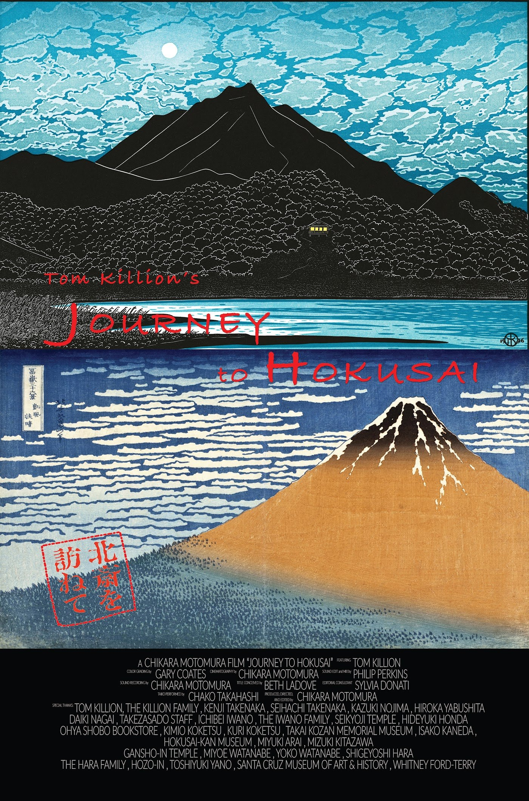

“My ‘Journey to Hokusai’ taught me how Hokusai achieved this extraordinary immortality as his art spread out across the whole world, influencing how we see both man and nature, and how we understand the mystical power of beauty in our world.” — Tom Killion
Tom Killion has long held a dream – to go to Japan and learn a traditional method of printing by hand. Deeply touched by the artist Hokusai’s prints when he was a child, Tom has for almost 50 years successfully created iconic California landscape prints. This film follows Tom’s journey to Japan to finally learn the traditional technique from Kenji Takenaka, a 5th-generation printer in Kyoto.
Journey to Hokusai is a feature-length documentary that intimately follows an artist’s creative process and discovery of the origins of his art. Tom Killion, a woodblock print artist, identifies the 19th-century Japanese artist Hokusai as his inspirational master and “the most talented artist ever.” When Tom makes his California landscape prints, his most important artistic references are Hokusai’s landscape prints. Tom sketches a real landscape just like Hokusai did 200 years ago. He carves woodblocks using Japanese hand tools. But when it comes to printing, Tom uses a German printing press and oil-based ink, unlike the traditional Japanese method of printing by hand with watercolor ink.
The film follows every step of Tom’s journey: choosing a sketch illustrating the California landscape; carving it on woodblocks in his studio; learning the traditional printing technique with Kenji Takenaka, a 5th-generation master printer in Kyoto; and successfully producing the print. Throughout the film, Tom’s homage to Hokusai is interwoven as poignant side stories — Hokusai’s grave in Tokyo; a 9th-generation “Living National Treasure” papermaker in the Echizen region whose ancestors must have produced paper for Hokusai’s prints; the town of Obuse in central Japan, where Hokusai spent his last few years and produced some of his important works; and sites where some of Hokusai’s Mt. Fuji prints were created.
描
Sketch
Like Hokusai two hundred years ago, Tom draws from a real landscape — choosing the California view that will become a new print.
彫
Carve
In his studio, Tom cuts the design into woodblocks with Japanese hand tools, one block for every color.
摺
Print
In Kyoto, Tom trades his German press and oil-based ink for watercolor pigment and the hand-held baren, guided by master printer Kenji Takenaka.

Technical Specifications
Crafted in 4K Cinema Resolution.
Running Time
80 minutes (Feature Documentary)
Master Format
4K (4096×2160) · 2:1
Included Editions
English Subtitled Edition & Japanese Subtitled Edition
Language & Audio
English & Japanese · Stereo
Music
Taiko performed by Chako Takahashi · Cello & piano score
Filmed On Location
Kyoto, Tokyo, Echizen, Obuse & Mt. Fuji, Japan · California, USA
03 · Visual Archive
Frames from the Journey.
Select any frame to inspect in full screen.
Tom Killion arrives in Tokyo, in search of HokusaiFace to face with Hokusai’s ceiling painting in ObuseMt. Fuji — the mountain Hokusai drew again and againBrushing watercolor pigment onto a carved woodblockTom lifts a fresh hand-printed impression from the block
04 · Filmmaker
Chikara Motomura
Born in Japan and based in the San Francisco Bay Area, Chikara Motomura has worked for nearly thirty-five years as an independent documentary director, cinematographer, and editor across New York, Hawaii, and California. Beginning his career in New York, he spent more than two decades directing and shooting for major Japanese television networks including NHK, Japan’s public broadcaster.
After moving to the Bay Area in 1997, Motomura served as a principal collaborator on fourteen independent feature films with Sundance Grand Jury Prize and Cannes Caméra d’Or winner Rob Nilsson, and worked as cinematographer and editor on Link TV’s Peabody Award-winning program Mosaic. Often working as an intimate one-person camera and sound crew, his feature documentaries include Journey to Hokusai (2019), Kinobu: Food, Tradition, and Identity (2025), and the forthcoming The Last Boatbuilder.
Tom Killion (Woodblock Print Artist)Kenji Takenaka (5th-Generation Master Printer, Kyoto)
Color Grading
Gary Coates
Sound Edit & Mix
Philip Perkins
Title Conceived By
Beth LaDove
Editorial Consultant
Sylvia Donati
Music
Taiko performed by Chako Takahashi“Piano and Cello” — Soundtrapper“The Tale-Teller (Strings Only)” — LynnePublishing“Retro Lounge Jazz” — Vuxelle“Atmospheric Cello and Piano Film,” “Spacious Cello and Piano Film Music,” “Quiet Wonder (Piano Trio),” “Ambient Cello and Piano Atmosphere,” “Cello and Piano Film Music Atmosphere,” “Mysterious, Suspense – Sparse Cello and Piano Atmosphere” — GestonWreen